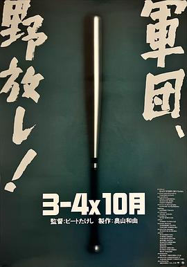
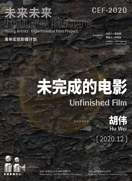
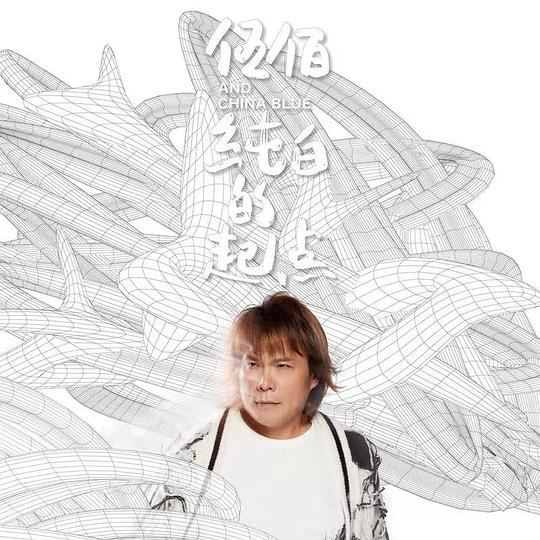
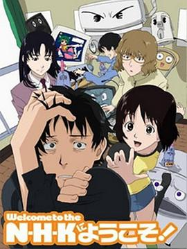
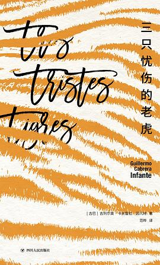
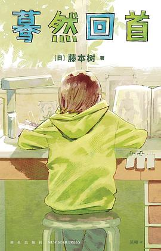
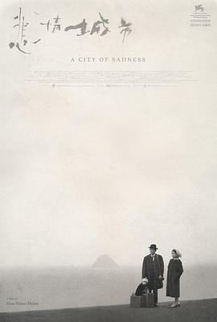
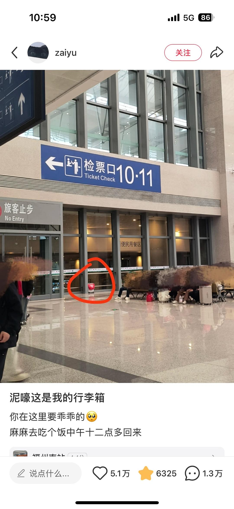
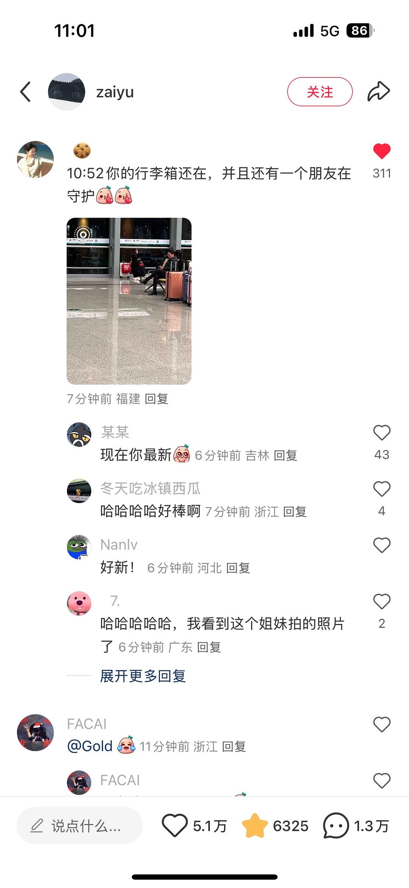

广播
共 65 个月
2293 条广播
其中 1543 条带正文
广播发布后不可编辑，所以每条都是那一刻的原话。
2025-06-29 10:41:21
豆瓣原页
 在看 幸运星 / らき☆すた ★★★★★
在看 幸运星 / らき☆すた ★★★★★
节奏脑洞都挺好。（看到“美味的日子”了。）（真为阿宽感到可惜，编舞便很勾引人。）（每次白石的ed都要笑死人。）
2025-06-29 10:41:09
豆瓣原页
看过 模型姐妹OVA / +チック姉さん OVA ★★★★☆
太沙雕。
2025-06-27 22:00:38
豆瓣原页
看过 F1：狂飙飞车 / F1: The Movie ★★★★☆
真是燃爆了。开幕就给我以震惊，当我还在疑惑为何伊始便使用IMAX画幅的时候突然想起来这是全程IMAX画幅，因此尤其庆幸自己看了这一场。之后简要字幕出现，给了个大全景，推进，推进，一直不断推进，车入画，镜头平稳跟车，一切如鱼得水般自然，我简直不能想这是如何拍出来的。小阿汤有点技术的。小哥说皮特九十岁时我好伤心，明明我看他风韵犹存，越老越有味。扑克的意象贯穿，配合得很好。烟花升起来真好看。唯一不足的还是和《TOP GUN2》一样的毛病，接近高潮的剧情抑或高潮情节总是会出现不自知的颓势，常有顶不上去的情况。但总体上我看得很开心，十分有临场感。
2025-06-25 23:46:46
豆瓣原页
 在看 幸福伽菜子的快乐杀手生活 / 幸せカナコの殺し屋生活 ★★★★☆
在看 幸福伽菜子的快乐杀手生活 / 幸せカナコの殺し屋生活 ★★★★☆
蛮精致的一部篇幅较短的剧。
2025-06-21 17:16:07
豆瓣原页
 听过 和你一起的旅行 ★★★★☆
听过 和你一起的旅行 ★★★★☆
一大年过去了声音还是小孩子的嗓子，真是蛮厉害的。
2025-06-21 17:15:55
豆瓣原页
 在听 She’s So Unusual ★★★★★
在听 She’s So Unusual ★★★★★
好艺术好古灵精怪的封面。
2025-06-20 23:13:30
豆瓣原页
看过 赛德克·巴莱 / 賽德克·巴萊 ★★★★☆
一部壮阔悲丽的史诗片，色彩冷冷的，摄影很干净，服化道很真实。喜欢他们作比喻时总是用自然的意象。
2025-06-19 23:27:32
豆瓣原页

看过 3比4X10月 / 3-4X10月 ★★★★☆
钓鱼佬真是无论到哪都想着邀人一起钓鱼呀。在第二部作品里老头子就开始喜欢上沙滩游戏与大海了。沙耶香好好看，我总觉得现实里在哪见过她。棒球的规则我还是一窍不通。玻璃师傅进黑社会那会好嫩哦，老头子也很青雉，没想到演了个基大佬。“忍耐”的将棋与走火的花束真是笑喷我了。老头子不断拍打抽打踢打女伴时，那神情我不觉想起我的祖父，他的殴打似乎也是不自觉地想止住我的哭声。老头子真是才华横溢，在KTV的那段梅开二度与结尾和开头的呼应简直才气纵横，基大佬的那程像是插叙，最后油车的爆炸好震撼，归到底还是少年澎湃的幻想。
2025-06-18 13:44:45
豆瓣原页
 读过 白夜 ★★★★☆
读过 白夜 ★★★★☆
杨青送我的第二本小书。沉溺于陀翁自在的讲述之中。大部分由对话推进故事，最后的结局实话说意料之中，但无奈幻想家人太好，导致这部小说充满了善意人性的光辉。有点像《夜以继日》。
2025-06-18 13:43:59
豆瓣原页
读过 白夜 ★★★★☆
杨青送我的第二本小书。沉溺于陀翁自在的讲述之中。大部分由对话推进故事，最后的结局实话说意料之中，但无奈幻想家人太好，导致这部小说充满了善意人性的光辉。
2025-06-17 23:20:15
豆瓣原页
 看过 阳光普照 / 陽光普照 ★★★★☆
看过 阳光普照 / 陽光普照 ★★★★☆
以一场冲突开场，用一个家庭的矛盾作为切入点，完整地克制地讲述了这之后的故事。父亲说明“一个儿子”含义的那段最让人动情。菜头真的守约没有在车内抽烟，真意外。小胖子背九九乘法表不会更催眠么。有两处穿帮。
2025-06-17 16:30:56
豆瓣原页
看过 丑陋的继姐 / Den stygge stesøsteren ★★★☆☆
整部影片就是给继姐的坏找了个合理的理由，真是部善良的cult片啊。当时刚上线的时候我便保存了电影，但一直拖到这时候才看就是因为好血淋淋的痛楚我实在接受不了，置景造型真实可怖，尤其最后虫子的拽出直接给我好大的心理打击。但另说。影片整体的色调很莫兰迪，现代的合成器的音色搭上古典的景实在新颖。继姐的悲剧究竟还是来源于母亲对权力的觑觎，灰姑娘也不该也不至于与马夫做个爱便成了阶下囚。
2025-06-17 10:39:11
豆瓣原页
在读 白夜 ★★★★☆
杨青送我的第二本小书。沉溺于陀翁自在的讲述之中。
2025-06-17 09:26:42
豆瓣原页
 想读 小城与不确定性的墙
想读 小城与不确定性的墙
我必须要读完！
2025-06-17 09:25:59
豆瓣原页
读过 1Q84（全三册） ★★★★☆
除了第一本是书店买的，后两册都是在Kindle上读完的。那时候是夏天，最好奇不过高速旁的楼梯，与天上的一大一小的两个月亮。
2025-06-16 23:16:14
豆瓣原页
 听过 浮世巡り ★★★★☆
听过 浮世巡り ★★★★☆
喜欢《ハレハレヤ》，所谓朗朗晴天，就是之前和同学一起唱过。
2025-06-16 23:10:55
豆瓣原页
看过 明日边缘 / Edge of Tomorrow ★★★★☆
果然还是骑着摩托的阿汤最帅。从头到尾其实都是少校最自私的爱么，是既要保护世界，也要保护对方么。所以最后才要强行HE的么。虽然剧情有些漏洞，不过实话实说大飞机当船开的壮举我倒是头一次见，外骨骼装甲也是我见过的效果比较好的，武器的概念不错，综上非常值得一看。
2025-06-15 19:54:43
豆瓣原页

想看 未完成的电影
2025-06-15 18:23:03
豆瓣原页
看过 春风沉醉的夜晚 ★★★★☆
他们做着爱的时候好艰苦，脸上没有一点欢愉，尤其男男之间更是粗砺无比。洗澡那一段我想起了《燃冬》里周与刘的纠错，只是这里的过曝实在严重。高速上真的可以走人么，这也太危险了。南京的景熟悉又不熟悉，郁达夫的散文可真美啊。
2025-06-14 22:20:14
豆瓣原页
 听过 Her ★★★★★
听过 Her ★★★★★
喜欢《Milk&Honey》开头的音色与节奏。
2025-06-14 22:13:08
豆瓣原页
看过 堤 / La jetée ★★★★★
本以为是剧照构成的电影的时候，女主角水灵灵的眨眼令我惊叹。现在与过去的平行蒙太奇功力很深，并且最后男人奔跑过去与女人发丝扬起的交叉剪辑让我印象深刻。但没有运动的画面还是枯燥，还好音乐将气氛烘托得恰如其分。结尾照应开头，可以称上历史上的较完美收尾了，编剧想象力真丰富。
2025-06-13 00:22:21
豆瓣原页
 读过 爱你就像爱生命 ★★★★☆
读过 爱你就像爱生命 ★★★★☆
校图书馆借的，也不知道什么版本。奇怪为什么后面会加上小说《绿毛水怪》。（2025, 5, 24，小波真痴情呀，写得最多居然是“你什么时候回来。”）
2025-06-13 00:22:10
豆瓣原页
 读过 平面国 ★★★★★
读过 平面国 ★★★★★
好神奇，开头的序便浑然天成，不敢想这是百多年前人写出来的书，况且纪实且先进。要不是杨青送给我，我恐怕真真不会了解到这本书了。讽刺得真辛辣且自洽。（在午夜的车站读完，觉得译后谈更是神来之笔。）
2025-06-12 17:43:44
豆瓣原页
看过 那一天的她们 / あの日の彼女たち ★★★★☆
虽然是短片，不重剧情凭细节也很好地刻画了人物。作画好精致，好多京都脸。
2025-06-12 17:43:40
豆瓣原页
看过 停滞 / Stalled ★★★☆☆
不好看，一个心理博弈片。
2025-06-12 17:19:17
豆瓣原页
在看 那一天的她们 / あの日の彼女たち ★★★★☆
虽然是短片，不重剧情凭细节也很好地刻画了人物。作画好精致，好多京都脸。
2025-06-12 16:56:33
豆瓣原页
看过 戏梦巴黎 / The Dreamers ★★★★☆
玛丽莲梦露的大头照贴在小红帽之上的样子如此戏谑，三个人被Isabelle自私地一起正在自杀的时候，还是革命把他们阴差阳错地救了回来。破《法外之徒》记录时的他们笑得好灿烂，可现实不像他们奔跑的样子那么美好，也不像Matthew表现得那么礼貌，武装革命才是出路。反叛的精神时而浮现时而消退，就连cast表都是倒着放映的。但话又说了回来，Bertolucci就没有豆瓣徽章么。
2025-06-12 09:08:17
豆瓣原页
在读 平面国 ★★★★★
好神奇，开头的序便浑然天成，不敢想这是百多年前人写出来的书，况且纪实且先进。要不是杨青送给我，我恐怕真真不会了解到这本书了。
2025-06-12 08:37:36
豆瓣原页
想读 爱你就像爱生命
校图书馆借的，也不知道什么版本。奇怪为什么后面会加上小说《绿毛水怪》。（2025, 5, 24，小波真痴情呀，写得最多居然是“你什么时候回来。”）
2025-06-08 19:02:30
豆瓣原页
 听过 这个下午很无聊 ★★★★☆
听过 这个下午很无聊 ★★★★☆
买不到的长寿烟。（好随意的词哦。）
2025-06-08 19:02:08
豆瓣原页

听过 纯白的起点 ★★★★☆
喜欢主打歌，洋溢着淡淡的无所谓的情绪。（现在专辑制作的概念都趋向于念诗了么？）
2025-06-08 14:15:28
豆瓣原页
听过 Deadman ★★★★☆
蛮中听的soul，真一开始以为是giveon的曲风。坤坤这是怎么回事。
2025-06-07 20:27:06
豆瓣原页
看过 疾速追杀：芭蕾杀姬 / Ballerina ★★★☆☆
剧情实在老套，也就是视觉标新立异了些。
2025-06-07 17:26:19
豆瓣原页
在听 Deadman ★★★★☆
蛮中听的soul，真一开始以为是giveon的曲风。坤坤这是怎么回事。
2025-06-07 17:09:03
豆瓣原页
 看过 一条安达鲁狗 / Un chien andalou ★★★★★
看过 一条安达鲁狗 / Un chien andalou ★★★★★
女人看着伸出的手腕上的手表，而后出手拉下的镜头以后我必将致敬。切开的眼睛与手掌里的蚂蚁都好猎奇哦。实话说我真没看懂，但就像做了场梦一样畅快。
2025-06-07 16:16:07
豆瓣原页
看过 罪人 / Sinners ★★★★☆
实话说电影里的夜晚使我恐惧，而IMAX画幅里的伴着碎碎的淡蓝云彩的黎明叫我向往。Sammy弹着琴的那个长镜头令我印象深刻，后面搓碟的出场时让我惊呼。火烧在Grace身上时母性的光辉泛出，我只剩震撼。可惜不明白为什么使用IMAX电影机来拍，剪辑时却不考虑频繁切换给观影体验带来临场感的衰减。冰激凌球的比喻我恐怕又能记上一辈子了。整部电影醉翁之意不在酒，在乎最后猎杀3K党的情节。
2025-06-06 23:47:13
豆瓣原页
看过 伪物语 / 偽物語 ★★★★☆
依旧在线。（第九集了看完。）（好特别的艺术风格。空无一人的街道真猎奇。）
2025-06-06 23:14:38
豆瓣原页
关注片单 物语动画全系列
2025-06-06 13:17:29
豆瓣原页
看过 别当欧尼酱了！ / お兄ちゃんはおしまい！ ★★★☆☆
额，顶不上去节奏？（看到第六集。）（2025, 6, 4，究竟还是落入到校园叙事中了么，还是挑选了女性第二性征各自不一的初中来。まひろ好坏蛋哦。）（重作画，碎剧情，实际上是个百合番啊。）（2025, 6, 6，结尾有那么一刻陷进了身份认同的严肃话题里，可HE的要求使まひろ还是喝下了那瓶药。可是这算质变还是伪装呢，总不能一辈子靠吃药过下去吧，可不吃药那些人际关系又如何处理呢。结尾仿佛只要种种问题不揭露出来就代表着没有了一样，真不负责任。）
2025-06-04 19:21:16
豆瓣原页
 想看 小城日常 / CITY THE ANIMATION
想看 小城日常 / CITY THE ANIMATION
2025-06-04 19:21:14
豆瓣原页

想看 欢迎加入NHK / N・H・Kにようこそ!
2025-06-04 19:07:31
豆瓣原页
 在听 倩倩的十个白日梦 ★★★★☆
在听 倩倩的十个白日梦 ★★★★☆
从bobo和toto那里了解到了《芭比》，还挺抓耳的。
2025-06-03 14:03:50
豆瓣原页
想看 罪人 / Sinners
2025-06-03 13:51:24
豆瓣原页
在听 纯白的起点 ★★★★☆
喜欢主打歌，洋溢着淡淡的无所谓的情绪。
2025-06-02 15:55:03
豆瓣原页
看过 碟中谍8：最终清算 / Mission: Impossible - The Final Reckoning ★★★★★
完美的终章。三段IMAX画幅的动作戏都十分吸引人，令我不由揪心。抓飞机那段难得一见蘑菇头阿汤哥，西蒙老了也是幽默与帅气十足。最后看得有点想哭，想起来自己的一把伞落在了单车框里就更想哭了。
2025-05-31 18:35:18
豆瓣原页
 看过 星际宝贝史迪奇 / Lilo & Stitch ★★★☆☆
看过 星际宝贝史迪奇 / Lilo & Stitch ★★★☆☆
遛狗要牵绳，现实里似乎真没有蓝色的狗。vans可不能碰水啊，会开胶。双线叙事很好，一条明线是姐姐与妹妹，一条暗线是妹妹拯救史迪奇，只是剧情实在太过合家欢不太能推敲，就算是“欧哈纳”也无法改变。史迪奇真可爱啊。和弟弟妹妹看的又一部电影。
2025-05-29 08:15:51
豆瓣原页
转发了 我们都爱养鸟小组 的讨论
小鸡算不算呢。


2025-05-29 00:04:15
豆瓣原页
 看过 神探夏洛克(试播集) / Sherlock S01E00 Pilot ★★★★☆
看过 神探夏洛克(试播集) / Sherlock S01E00 Pilot ★★★★☆
好肥皂剧的样子。剧情比正剧合理了一些。
2025-05-29 00:02:35
豆瓣原页
在听 和你一起的旅行 ★★★★☆
一大年过去了声音还是小孩子的嗓子，真是蛮厉害的。
2025-05-27 23:58:12
豆瓣原页
 看过 法式火锅 / La Passion de Dodin Bouffant ★★★★☆
看过 法式火锅 / La Passion de Dodin Bouffant ★★★★☆
真不愧为最佳导演，场面调度很是厉害，做菜的碟碟罐罐多得难以管理，但陈英雄还是很让我流畅地认出做了哪些菜。伯努瓦在这里的造型令我想起了威廉姆斯，比诺什真漂亮。一开始吃饭时的平行蒙太奇点出了比诺什才是真正的主角，同时她洗澡时又可以与伯努瓦开头的泡澡作对比，床戏可真是一如既往地潮湿与越南。所以一旦比诺什是生了病后是否是处于颓势才答应了结婚的要约。天线和白布盖着吃东西可真是好笑，这部电影又可以叫作厨师与其贪吃馋嘴的朋友，也因此导致我在看电影的时候不断地吃着零食。后半段用来寻味，最后的环绕镜头有一次展现了陈英雄奇迹般地调度，连灯光都自得其然，就是我不喜欢间歇性的推移后同时变焦的镜头，那使我想起了《南方车站的约会》，看得我很难受。
2025-05-26 13:02:28
豆瓣原页
 读过 光之豚 ★★★☆☆
读过 光之豚 ★★★☆☆
bobo与toto在《燕尾蝶》故事的后续，但看得我很费劲。（2025, 5, 26，“即使人们珍惜了，也终有一天要与那些心爱的告别。”后记让我看得也害怕起我的咪咪离开。成年之后会变成动物，好新颖的观点。）
2025-05-26 00:15:32
豆瓣原页
读过 光之豚 ★★★☆☆
bobo与toto在《燕尾蝶》故事的后续，但看得我很费劲。（2025, 5, 26，“即使人们珍惜了，也终有一天要与那些心爱的告别。”后记让我看得也害怕起我的咪咪离开。）
2025-05-25 00:57:10
豆瓣原页
在读 光之豚 ★★★☆☆
bobo与toto在《燕尾蝶》故事的后续，但看得我很费劲。
2025-05-24 18:26:40
豆瓣原页
 看过 黑客红蜘蛛 ★★★☆☆
看过 黑客红蜘蛛 ★★★☆☆
真定格动画。飞机的转场很棒。总体是来黑卡巴斯基的么。时代的眼泪了。
2025-05-24 15:18:51
豆瓣原页
 看过 功夫兔系列3：菜包狗大反击 ★★★★☆
看过 功夫兔系列3：菜包狗大反击 ★★★★☆
制作较前两部更精良了。不过为什么哪都有致谢mint老师的呢。
2025-05-24 15:09:38
豆瓣原页
 看过 功夫兔系列之2：兔子哪里跑 / Kungfu Bunny 2 ★★★★☆
看过 功夫兔系列之2：兔子哪里跑 / Kungfu Bunny 2 ★★★★☆
永远对实景作画动心，没办法。
2025-05-24 15:04:27
豆瓣原页
 看过 功夫兔系列1：少林兔与武当狗 ★★★☆☆
看过 功夫兔系列1：少林兔与武当狗 ★★★☆☆
当时看肯定创意十足，但现在只是索然无味。
2025-05-23 22:03:11
豆瓣原页
 看过 燕尾蝶 ★★★★★
看过 燕尾蝶 ★★★★★
bobo的一步三回头让我哽咽住，熊猫与小鸡真的只能是悲剧么。被扔进垃圾桶里真的好可怕，所以说不能乱吃东西啊。cast里居然是iso和mint夫妻档配音哈。
2025-05-23 18:23:58
豆瓣原页
 看过 芭比Girl ★★★★☆
看过 芭比Girl ★★★★☆
一个离经叛道的有关爱的故事。
2025-05-23 18:06:31
豆瓣原页
 看过 圣诞夹子 ★★★★☆
看过 圣诞夹子 ★★★★☆
最后圣诞老人火烧屁股有点离谱。
2025-05-23 18:06:01
豆瓣原页
 看过 圣诞礼物 ★★★★☆
看过 圣诞礼物 ★★★★☆
2025-05-23 17:55:11
豆瓣原页
 看过 狂想曲 ★★★★★
看过 狂想曲 ★★★★★
中间那段的追逐蒙太奇很棒。
2025-05-23 17:37:53
豆瓣原页
在听 这个下午很无聊 ★★★★☆
买不到的长寿烟。
2025-05-23 17:37:38
豆瓣原页
 听过 晚安喵 ★★★★☆
听过 晚安喵 ★★★★☆
我在生日那天晚上唱过。
2025-05-23 17:34:58
豆瓣原页
听过 这个下午很无聊 ★★★★☆
买不到的长寿烟。
2025-05-23 17:24:54
豆瓣原页
 看过 波波和托托 / BOBO&TOTO ★★★★☆
看过 波波和托托 / BOBO&TOTO ★★★★☆
终于有条目啦！（没想到熊猫的性征这么明显。iso的声音真好听。）（越往后分镜越有设计了。蛮好。）
2025-05-23 17:04:20
豆瓣原页
在看 波波和托托 / BOBO&TOTO ★★★★☆
终于有条目啦！（没想到熊猫的性征这么明显。iso的声音真好听。）
2025-05-23 15:20:37
写了《BOBO&TOTO》的讨论
(o^^o)
2025-05-23 15:00:15
豆瓣原页
想看 波波和托托 / BOBO&TOTO
终于有条目啦！
2025-05-23 14:59:05
豆瓣原页
上传了1张照片到 波波和托托 BOBO&TOTO (2005) 的 图片
2025-05-23 13:54:05
豆瓣原页
 想看 天使爱过界 / À la folie… pas du tout
想看 天使爱过界 / À la folie… pas du tout
粉色的表白。
2025-05-22 22:20:10
豆瓣原页
 看过 蜂鸟 / 벌새 ★★★★☆
看过 蜂鸟 / 벌새 ★★★★☆
蜂鸟究竟是何物，开头反常的敲门与中段对着背影喊母亲的过程皆仿若做梦一般，真实的历史事件串联起了人物，并实际地推动情节的急剧变化，使少女看世界的目光都开始游离却炯炯了起来。老师好帅哦，最后她与少女见不到的一面才最让人痛心，。同时老师的一句话我恐怕会记很久的，“不要随便地同情他人。”镜头纪实地记录那个时候教育的呆板与个体户的浅显，使父母的无视与关心反而合理了起来。另外父母的婚姻虽然几个镜头寥寥带过，可是很值得深思。桥塌了，少女该成长了。
2025-05-22 17:41:47
豆瓣原页
 听过 爱的声响-Bobo & Toto系列动画音乐精选集 ★★★★★
听过 爱的声响-Bobo & Toto系列动画音乐精选集 ★★★★★
喜欢《反战》的那一首。好奇mint与iso的爱情故事。我真心羡慕。
2025-05-22 12:59:42
豆瓣原页
 听过 爱的声响-BoBo&ToTo系列动画音乐原声集 ★★★★★
听过 爱的声响-BoBo&ToTo系列动画音乐原声集 ★★★★★
粗糙但是真切。iso的歌声好像小孩子。
2025-05-22 09:16:44
豆瓣原页
 看过 罗小黑战记番外篇：晚安喵 ★★★★☆
看过 罗小黑战记番外篇：晚安喵 ★★★★☆
真好。
2025-05-21 18:41:16
豆瓣原页
 看过 奔跑吧 第九季 ★★★☆☆
看过 奔跑吧 第九季 ★★★☆☆
和baby一起悠闲看的。
2025-05-21 15:13:32
豆瓣原页
在看 奔跑吧 第九季 ★★★☆☆
和baby一起悠闲看的。
2025-05-21 11:29:19
豆瓣原页
 读过 負けヒロインが多すぎる! 8 ★★★★☆
读过 負けヒロインが多すぎる! 8 ★★★★☆
老马这卷要发力了么。除了第一卷外最喜欢的一卷了，老马在这里简直是一个很真实的女孩，最后的告白让我也心头一颤。真舍不得老马啊。温水的两个行为有点下头，不，大部分男同志好像都差不多。
2025-05-20 22:38:17
豆瓣原页
 看过 喂，看见耳朵啦 / ほら、耳がみえてるよ！ ★★★☆☆
看过 喂，看见耳朵啦 / ほら、耳がみえてるよ！ ★★★☆☆
篇幅比较短小的治愈作，忘记了当时为什么要标记想看了，今晚顺手看完。这就是软耽美么。很快看完了，除了第一集是国语的，剩下的都是日语版的，雄马的声音蛮好听的。去日本依旧是烟火大会那几样，吵吵闹闹的很逗比但是没意思。
2025-05-20 22:13:42
豆瓣原页
在看 喂，看见耳朵啦 / ほら、耳がみえてるよ！ ★★★☆☆
篇幅比较短小的治愈作，忘记了当时为什么要标记想看了，今晚顺手看完。这就是软耽美么。
2025-05-20 19:35:18
豆瓣原页
 读过 路易·波拿巴的雾月十八日 ★★★★☆
读过 路易·波拿巴的雾月十八日 ★★★★☆
老马的眼光果然毒辣。（2025, 5, 20，沉默的大多数才是左右历史的关键力量，这是唯物史观的具体体现。不过在老马笔下看这场政治闹剧俨然一场过家家似的。这里也体现了资产阶级有着无法克服的软弱性。没有正确指导思想的无产阶级只能被当作枪使么。）
2025-05-20 18:03:09
豆瓣原页
读过 路易·波拿巴的雾月十八日 ★★★★☆
老马的眼光果然毒辣。（2025, 5, 20，沉默的大多数才是左右历史的关键力量，这是唯物史观的具体体现。不过在老马笔下看这场政治闹剧俨然一场过家家似的。资产阶级有着无法克服的软弱性。）
2025-05-20 17:59:36
豆瓣原页
在读 爱你就像爱生命 ★★★★☆
校图书馆借的，也不知道什么版本。奇怪为什么后面会加上小说《绿毛水怪》。
2025-05-20 17:58:41
豆瓣原页
在读 負けヒロインが多すぎる! 8 ★★★★☆
老马这卷要发力了么。
2025-05-20 15:30:38
豆瓣原页
 看过 总之就是非常可爱 ～制服～ / トニカクカワイイ ～制服～ ★★★☆☆
看过 总之就是非常可爱 ～制服～ / トニカクカワイイ ～制服～ ★★★☆☆
太离谱了他们居然还只是高中生的年龄么。第一季影响最深的还是惊为人天的开头与充满电音的op。nasa恐怕是觉醒了制服xp了吧，问题是你们也太纯爱了，纯到成了柏拉图式一般的去掉了性的存在。
2025-05-19 22:09:24
豆瓣原页
 看过 神探夏洛克：可恶的新娘 / Sherlock: The Abominable Bride ★★★☆☆
看过 神探夏洛克：可恶的新娘 / Sherlock: The Abominable Bride ★★★☆☆
最后居然没有说明那具掉包的尸体究竟哪去了，很可惜，不过也算是开启了第四季。这里胖胖的Mycroft和飒飒的Molly真是意想不到的惊喜。那个时代里妇女参政论者的兴起使其很值得去讨论女性的解放运动，但程序正义与实体正义的优胜劣汰我还是讲不明白。现代词汇的引入，例如“virus in the data.”使其宛如一场舞台剧。这里也讨论了剧集里夏洛克的塑造问题，究竟是探案为先还是讲好夏洛克本人的故事，显然编剧也更倾向于后者。梦中梦的结构很有意思，最后也复刻了经典的莱辛巴赫瀑布场景，但就是没劲，因为《神探夏洛克》的特色就在于讲历史的夏洛克在现代语境下的故事啊。
2025-05-19 16:33:16
豆瓣原页
在听 这个下午很无聊 ★★★★☆
买不到的长寿烟。
2025-05-19 14:40:06
豆瓣原页
 读过 银河铁道之夜 ★★★★☆
读过 银河铁道之夜 ★★★★☆
《烟花》里开头的童话，想见识见识天之芒草究竟是何物。
2025-05-19 14:39:18
豆瓣原页
 读过 张枣的诗 ★★★★★
读过 张枣的诗 ★★★★★
从《四个四季·夏歌》所熟识，也可惜《四个四季》没有冬歌。
2025-05-19 14:37:45
豆瓣原页
 读过 夜的命名术 ★★★★☆
读过 夜的命名术 ★★★★☆
喜欢《从另一边》《蓝》和《黄昏》。反复理解扉页的引语，死亡并不可怕。
2025-05-19 14:36:57
豆瓣原页
 读过 繁花 ★★★★★
读过 繁花 ★★★★★
真厉害呀这个文字，短促又准确。我最喜欢沪太路。
2025-05-19 14:30:17
豆瓣原页
 看过 神探夏洛克：最后的誓言 / Sherlock: His Last Vow ★★★☆☆
看过 神探夏洛克：最后的誓言 / Sherlock: His Last Vow ★★★☆☆
实话说并不觉得这集出彩。真正让我赞叹不已的是s02
e01。
2025-05-19 14:25:37
豆瓣原页
 看过 神探夏洛克：福至如归 / Sherlock Mini Episode - Many Happy Returns ★★★☆☆
看过 神探夏洛克：福至如归 / Sherlock Mini Episode - Many Happy Returns ★★★☆☆
《福至如归》的翻译很好。
2025-05-18 22:53:58
豆瓣原页
 看过 夏日大作战 / サマーウォーズ ★★★★☆
看过 夏日大作战 / サマーウォーズ ★★★★☆
看得很开心很热血，里面受限于时代所展现的传统大家庭没什么值得好批判。中间的棒球与战斗的平行叙事很有趣，只是最后的花牌决斗有些草率，况且我不懂规则光顾着呐喊“世界人民大团结万岁”了。
2025-05-18 20:26:22
豆瓣原页
 看过 辉夜大小姐想让我告白：初吻不会结束 / かぐや様は告らせたい-ファーストキッスは終わらない- ★★★★☆
看过 辉夜大小姐想让我告白：初吻不会结束 / かぐや様は告らせたい-ファーストキッスは終わらない- ★★★★☆
依然沙雕的剧情，但是讨论起了更深刻的话题，即本我的真实性。不明白为什么好好一部电影要拆开成四集episode，也不明白其中一些的画面切割是究竟何意。但是他们的恋爱终归甜腻腻的，真好啊。
2025-05-18 12:07:08
豆瓣原页
 看过 青梅竹马 / 青梅竹馬 ★★★★☆
看过 青梅竹马 / 青梅竹馬 ★★★★☆
杨导的又一把手术刀，依旧是十分克制的镜头记录叙事。青涩的侯导有些痞帅痞帅的，似乎在时时刻刻清醒地管着别人的事情，但第一次糊涂丢了车，第二次糊涂丢了命。每个人好像都在走着下坡路。
2025-05-18 08:52:58
豆瓣原页
 想看 风林火山 / 風林火山
想看 风林火山 / 風林火山
2025-05-17 01:06:39
豆瓣原页
 听过 温软宇宙 ★★★★☆
听过 温软宇宙 ★★★★☆
间奏的旋律很悦耳。
2025-05-17 01:05:46
豆瓣原页
 看过 沃玛的生活 ★★★★★
看过 沃玛的生活 ★★★★★
好看无须多言。
2025-05-17 00:40:56
豆瓣原页
 看过 攻壳机动队 / 攻殻機動隊 ★★★★★
看过 攻壳机动队 / 攻殻機動隊 ★★★★★
“网络无限宽广。”这句话真是深刻点明了网络的本质，三十年前就清晰认识了简直不可思议。不过有些好奇为什么科技生产力都那么发达了为什么国家与民族还存在呢。因为删减问题没去影院看有点可惜。
2025-05-16 13:06:59
豆瓣原页
 看过 琳达！琳达！琳达！ / リンダ リンダ リンダ ★★★★☆
看过 琳达！琳达！琳达！ / リンダ リンダ リンダ ★★★★☆
青春真是太青春了，光是下着雨的游泳池就满满洋溢着热情。小望冷冷的，瞌睡不醒好可爱捏。少女们赤脚站在台上放声歌唱，简直美好啊。
2025-05-15 23:27:21
豆瓣原页
 看过 世界尽头 / The World’s End ★★★★☆
看过 世界尽头 / The World’s End ★★★★☆
太有趣了这部，没想到冰激凌最后才出现，Andy胖胖的真可爱，King疯疯癫癫的状态在最后与机器人抑或他的好兄弟们的一起冒险下得到了真正的诠释。
2025-05-15 12:49:05
豆瓣原页
想看 阳光普照 / 陽光普照
2025-05-14 10:15:46
豆瓣原页
 读过 通往全新的你 1 ★★★★☆
读过 通往全新的你 1 ★★★★☆
画风笔触都不错，就是不明白为什么第八十一次的小亚希要勾引老师到上床。通宵看完六卷，开头的灾难使我想起了并不久远的过去。最后的感化有些草率，还是校园霸凌的那一套旧叙事。
2025-05-12 20:25:35
豆瓣原页
 看过 豚鼠系列之5：下水道的美人鱼 / ザ・ギニーピッグ マンホールの中の人魚 ★★☆☆☆
看过 豚鼠系列之5：下水道的美人鱼 / ザ・ギニーピッグ マンホールの中の人魚 ★★☆☆☆
分镜调度都有，道具十分逼真，就是剧情莫名其妙。
2025-05-12 20:24:14
豆瓣原页
收藏评论到豆列 理解 流氓无产阶级的统治及超越阶级的可能性
2025-05-12 18:20:46
豆瓣原页
看过 豚鼠系列之5：下水道的美人鱼 / ザ・ギニーピッグ マンホールの中の人魚 ★★☆☆☆
分镜调度都有，道具十分逼真，就是剧情莫名其妙。
2025-05-12 18:15:46
豆瓣原页
看过 豚鼠系列之5：下水道的美人鱼 / ザ・ギニーピッグ マンホールの中の人魚 ★★☆☆☆
分镜调度都有，道具十分逼真，就是剧情莫名其妙。
2025-05-12 17:50:40
豆瓣原页
 看过 豚鼠系列之2：血肉之花 / ギニーピッグ2 血肉の華 ★★★☆☆
看过 豚鼠系列之2：血肉之花 / ギニーピッグ2 血肉の華 ★★★☆☆
以前不知道怎么了解到的，但是就硬生生看完了。有点真又有点假。
2025-05-12 17:49:32
豆瓣原页
 看过 最后一幕 / ラストシーン ★★★☆☆
看过 最后一幕 / ラストシーン ★★★☆☆
最后有些没看懂。不过iPhone的虚化对上头发果真还是吃力。
2025-05-12 17:49:28
豆瓣原页
 看过 战·争 / Warfare ★★★☆☆
看过 战·争 / Warfare ★★★☆☆
意图是以小见大，可是见大又讲出了什么呢。百姓依旧只能空喊“WHY？！”。
2025-05-12 11:16:49
豆瓣原页
收藏讨论到豆列 理解 来回看了三遍 恶补了大量背景知识 做了一篇引路帖－解析片子中的大量隐喻
2025-05-12 09:12:23
豆瓣原页
 读过 王家卫的电影世界 ★★★★☆
读过 王家卫的电影世界 ★★★★☆
看看怎么系统化地看电影。（王家卫拍来拍去还是拍的周慕云的故事。）
2025-05-12 00:01:24
豆瓣原页
想看 最后一幕 / ラストシーン
最后有些没看懂。不过iPhone的虚化对上头发果真还是吃力。
2025-05-11 23:58:40
豆瓣原页
看过 最后一幕 / ラストシーン ★★★☆☆
最后有些没看懂。不过iPhone的虚化对上头发果真还是吃力。
2025-05-11 23:57:45
豆瓣原页
 看过 金刚经 ★★★☆☆
看过 金刚经 ★★★☆☆
真真开始有了自己的风格了。
2025-05-11 13:15:22
豆瓣原页
 看过 根本停不下来 ★☆☆☆☆
看过 根本停不下来 ★☆☆☆☆
按摩时候看的，没想到家庭矛盾还挺多的，烂梗堆成的电影。不过汽车智能化的确不能完全。
2025-05-10 18:26:01
豆瓣原页
 看过 幽灵公主 / もののけ姫 ★★★★★
看过 幽灵公主 / もののけ姫 ★★★★★
没想到这一部里宫老爷子使冲突十分地棘手，让各方都陷入了“对面灭则己存”的困境当中。同时领先地提出了“人与自然和谐共生”的理念，并全面刻画了“妇女能顶半边天”的场景。只是最后求神原谅我觉得不妥，究竟是没能认识到人的主观能动性。
2025-05-08 23:51:40
豆瓣原页
 想看 狂野时代
想看 狂野时代
2025-05-08 22:45:03
豆瓣原页
 看过 新·假面骑士 / シン・仮面ライダー ★★★☆☆
看过 新·假面骑士 / シン・仮面ライダー ★★★☆☆
太离谱了这部，痞子你怎么一部比一部导得还差。依旧是标志性的奇奇怪怪视角的镜头，尤其有了当年的《式日》的味道。电线杆与铁道的出现十分地风格化了，完全就解构了《假面骑士》作品的内涵了嘛，又把自己在《EVA》里的那一套搬了过来。话又说了回来，“SOUND ONLY”是我想到了SEELE。最后两位骑士必须要这么热忱地叫着对方的名字么，听得我好肉麻哦。
2025-05-06 20:55:36
豆瓣原页
 读过 十八岁出门远行 ★★★★☆
读过 十八岁出门远行 ★★★★☆
流畅的故事，丑陋的甚至不搭的封面。（等我回去继续读。）（2025, 5, 6，从家里带到学校里继续读，发现余华从年轻时就喜欢把弄时间与纠错故事，在《在细雨中呼喊》中尤集大成。）
2025-05-06 16:40:53
豆瓣原页
在读 十八岁出门远行 ★★★★☆
流畅的故事，丑陋的甚至不搭的封面。（等我回去继续读。）（2025, 5, 6，从家里带到学校里继续读，发现余华从年轻时就喜欢把弄时间与纠错故事，在《在细雨中呼喊》中尤集大成。）
2025-05-06 16:37:49
豆瓣原页
 看过 剧场总集篇 SSSS.电光机王 / 劇場総集編『SSSS.DYNAZENON』 ★★★☆☆
看过 剧场总集篇 SSSS.电光机王 / 劇場総集編『SSSS.DYNAZENON』 ★★★☆☆
简单过下剧情，中间历前辈的故事居然被略过了，真可惜。
2025-05-06 13:34:11
豆瓣原页
想看 剧场总集篇 SSSS.电光机王 / 劇場総集編『SSSS.DYNAZENON』
2025-05-03 20:33:47
豆瓣原页
 看过 大风杀 ★★★★☆
看过 大风杀 ★★★★☆
很好，不愧是剪接师出身的导演，画面剪辑十分讲究连贯。只是故事本身不是很精彩，那个像丁真的牧民果真是吃掉了羊。
2025-04-28 10:30:44
豆瓣原页
 想读 红唇
想读 红唇
2025-04-27 23:17:26
豆瓣原页
 看过 剧场总集篇 SSSS.古立特 / 劇場総集編『SSSS.GRIDMAN』 ★★★★☆
看过 剧场总集篇 SSSS.古立特 / 劇場総集編『SSSS.GRIDMAN』 ★★★★☆
失掉了手表的意象使得这部作品就像单纯地讲故事一样，原本电影的叙事风格消失了，很可惜。在这里是很陈旧的夏天了，我再看像是回忆一段往事一般。
2025-04-25 15:22:07
豆瓣原页
在读 王家卫的电影世界 ★★★★☆
看看怎么系统化地看电影。
2025-04-25 10:56:32
豆瓣原页
想看 琳达！琳达！琳达！ / リンダ リンダ リンダ
2025-04-24 20:42:11
豆瓣原页
读过 凉宫春日的剧场 ★★★★☆
熟悉的团长。（会刷视频的团长么，他们居然在与时俱进，真是好奇怪的感觉。但再看到sos团的故事还是让我十分开心的。）
2025-04-24 19:58:17
豆瓣原页
在读 路易·波拿巴的雾月十八日 ★★★★★
老马的眼光果然毒辣。
2025-04-24 17:35:45
说
实话说比较期待上影节。_(:з」∠)_
2025-04-22 15:22:20
豆瓣原页
读过 额尔古纳河右岸 ★★★☆☆
（2022, 12, 3，我想读了这一本书。）以后机缘巧合下杨青送了我这一本书，于是有机会读了起来。但里面的故事还是有些单调。开头的讲故事的手法比较新鲜。（2025, 4, 22，为了死亡而死亡，无聊。一点都没有史诗的沉重感。）
2025-04-20 20:35:59
豆瓣原页
 看过 孤独摇滚(上) / 劇場総集編ぼっち・ざ・ろっく！ Re: ★★★★☆
看过 孤独摇滚(上) / 劇場総集編ぼっち・ざ・ろっく！ Re: ★★★★☆
在影院看的，观感其实不怎么好。圣斋藤还是厉害的，一直没给波奇一个完整的面部特写，最后在回答小天使的问题里一个完整镜头里露出了完整的脸庞。“失掉个性就等于失掉生命。”
2025-04-20 17:44:15
豆瓣原页
读过 马小跳玩数学 ★★★☆☆
当同人小故事读了。
2025-04-18 15:49:30
豆瓣原页
 在听 After 17 ★★★★★
在听 After 17 ★★★★★
老叶推荐给我听的。
2025-04-18 14:06:20
豆瓣原页
看过 极恶非道 / アウトレイジ ★★★★☆
最后加藤的反转很让人惊喜。风格依旧冷峻。“活下去就是最好的复仇。”
2025-04-18 11:08:54
豆瓣原页
读过 分镜头设计 ★★★★☆
科普学习作。（最后写的好浅显，但是能介绍就是好知识。）
2025-04-17 09:30:13
写了《分镜头设计》的讨论
请问此处是否应该斯皮尔伯格的里《辛德勒的名单》的红衣小女孩？我在《拯救大兵瑞恩》里并没有再回想起相关情节。
2025-04-17 09:27:25
豆瓣原页
在读 分镜头设计 ★★★★☆
科普学习作。
2025-04-14 23:35:30
豆瓣原页
读过 飞行家 ★★★★☆
第一篇就让我理解了好半会，真是故事一开始就必须讲下去的节奏。（2025, 1, 5，还回图书馆了，等年后再看。）
2025-04-14 23:32:32
豆瓣原页
读过 1973年的弹子球 ★★★★☆
村上早期青雉的风格。好有趣的故事。
2025-04-14 15:01:06
豆瓣原页

读过 三只忧伤的老虎 ★★★★☆
好奇幻的开头。（2025, 4, 15，依旧没读完。）
2025-04-14 15:00:32
豆瓣原页

读过 蓦然回首 ★★★★☆
翻译得蛮加分的。
2025-04-13 09:53:38
豆瓣原页
 听过 安和桥北 ★★★★☆
听过 安和桥北 ★★★★☆
不评价个人，尤其喜欢《斑马，斑马》。
2025-04-12 22:21:57
豆瓣原页
在读 蓦然回首 ★★★★☆
翻译得蛮加分的。
2025-04-09 19:45:19
豆瓣原页
在读 1973年的弹子球 ★★★★☆
村上早期青雉的风格。
2025-04-08 19:17:35
豆瓣原页
读过 神的九十亿个名字 ★★★★☆
借的球球的，当时看着消磨时光。
2025-04-07 10:07:58
豆瓣原页
读过 平原上的摩西 ★★★★☆
开头的各种视角很有趣，这位作者看上去很喜欢短句。（就读了第一篇便还回去了。）
2025-04-04 14:30:54
豆瓣原页
 看过 机动战士高达：跨时之战 / 機動戦士Gundam GQuuuuuuX -Beginning- ★★★★☆
看过 机动战士高达：跨时之战 / 機動戦士Gundam GQuuuuuuX -Beginning- ★★★★☆
看的时候观感很像《古立特》，一看一原真有雨宫哲。米津玄师的声音一出来熟悉得不得了。
2025-04-03 15:10:28
豆瓣原页
在读 平原上的摩西 ★★★★☆
开头的各种视角很有趣，这位作者看上去很喜欢短句。
2025-04-03 08:30:05
豆瓣原页
收藏评论到豆列 理解 CRPG的文艺复兴与后社会主义的百年孤独
2025-03-30 16:30:56
豆瓣原页
 看过 混沌少年时 第一季 / Adolescence Season 1 ★★★★☆
看过 混沌少年时 第一季 / Adolescence Season 1 ★★★★☆
一镜到底技术一定是有的，演员张弛有度，可惜节奏实在拖沓，倒是完整展现了被捕后的种种事项。（剧情还是不太吸引人。看的时候总在考虑这是怎么拍出来的。_(:з」∠)_）（不好看，但拍摄手法值得借鉴。）
2025-03-28 22:09:33
豆瓣原页
在看 混沌少年时 第一季 / Adolescence Season 1 ★★★★☆
一镜到底技术一定是有的，演员张弛有度，可惜节奏实在拖沓，倒是完整展现了被捕后的种种事项。
2025-03-22 23:43:25
豆瓣原页

看过 悲情城市 ★★★★★
我拖了好久好久才看，里面的闽南话夹杂着日语发音，那动荡的年代里人们真是无处可去啊。
2025-03-21 11:08:38
豆瓣原页
想读 十八岁出门远行
流畅的故事，丑陋的甚至不搭的封面。（等我回去继续读。）
2025-03-21 11:07:01
豆瓣原页
在读 额尔古纳河右岸 ★★★☆☆
（2022, 12, 3，我想读了这一本书。）以后机缘巧合下杨青送了我这一本书，于是有机会读了起来。但里面的故事还是有些单调。开头的讲故事的手法比较新鲜。
2025-03-19 21:49:44
豆瓣原页
在听 安和桥北 ★★★★☆
不评价个人，尤其喜欢《斑马，斑马》。
2025-03-19 19:22:56
豆瓣原页
看过 南方车站的聚会 ★★★★☆
静态的背景里人物戏剧化地活动，特像在看舞台一般。镜子在这里被亦男用得炉火纯青，场面调度十分地得心应手，桂纶镁被胡歌跟着背景里出现了广告的摩天大厦的画面，十分魔幻十分神秘。混混对街区的分配与警察调查的分配尤其相似。门口门帘随风的飘曳，跳动的越来越大的人影，锈迹斑斑的人彘的柜子，物品都非常有戏。喜欢桂纶镁愈来愈媚的眼神，可我想问难道她必须要被按在公共洗衣机上被强奸么，难道她必须要和廖凡演对手戏么。这太残酷了。
2025-03-17 15:56:42
豆瓣原页
 听过 空中飞人 ★★★★☆
听过 空中飞人 ★★★★☆
嗯，嗯，目前只听了一首。（有一晚引申给了加多宝的悲伤。）
2025-03-14 15:33:03
豆瓣原页
收藏广播到豆列 理解 恶魔比格大王
2025-03-14 15:32:53
豆瓣原页
收藏小组讨论到豆列 理解
好热闹啊！


2025-03-13 14:23:41
写了《怪物》的讨论
rt。谢谢。
2025-03-12 20:25:11
豆瓣原页
读过 撒哈拉的故事 ★★★★☆
杨青借我的是这个版本，可我到现在都没读完。（2025, 3, 12，周末杨青要来这儿玩，趁手我要把此书还给她。结尾沙伊达真是苦了她了，文明的进步难道必须要流血么。）
2025-03-12 18:52:50
豆瓣原页
看过 怪物 ★★★★☆
结尾尤其像《无人知晓》。小赖太可爱了，眼睛真漂亮。他们的生活一如平常却又满是问题，火焰作为线索连接起了各自的时空，看得我眼泪汪汪。
2025-03-11 10:50:26
豆瓣原页
 想看 平原上的摩西
想看 平原上的摩西
2025-03-11 10:50:15
豆瓣原页
想看 戏梦巴黎 / The Dreamers
2025-03-11 10:50:02
豆瓣原页
 想看 椒麻堂会
想看 椒麻堂会
2025-03-09 23:00:13
豆瓣原页
 在看 神探夏洛克 第四季 / Sherlock Season 4 ★★★★☆
在看 神探夏洛克 第四季 / Sherlock Season 4 ★★★★☆
玛丽死得好草率。转场还是好厉害。
2025-03-05 20:37:21
豆瓣原页
 看过 神探夏洛克 第三季 / Sherlock Season 3 ★★★★☆
看过 神探夏洛克 第三季 / Sherlock Season 3 ★★★★☆
其实蛮心疼华生的。夏洛克真是到最后都在保护着他俩。
2025-03-04 14:46:49
豆瓣原页
在读 凉宫春日的剧场 ★★★★☆
熟悉的团长。
2025-03-03 23:40:19
豆瓣原页
在看 神探夏洛克 第三季 / Sherlock Season 3 ★★★★☆
其实蛮心疼华生的。
2025-03-03 18:13:26
说
虽然我还没看过。